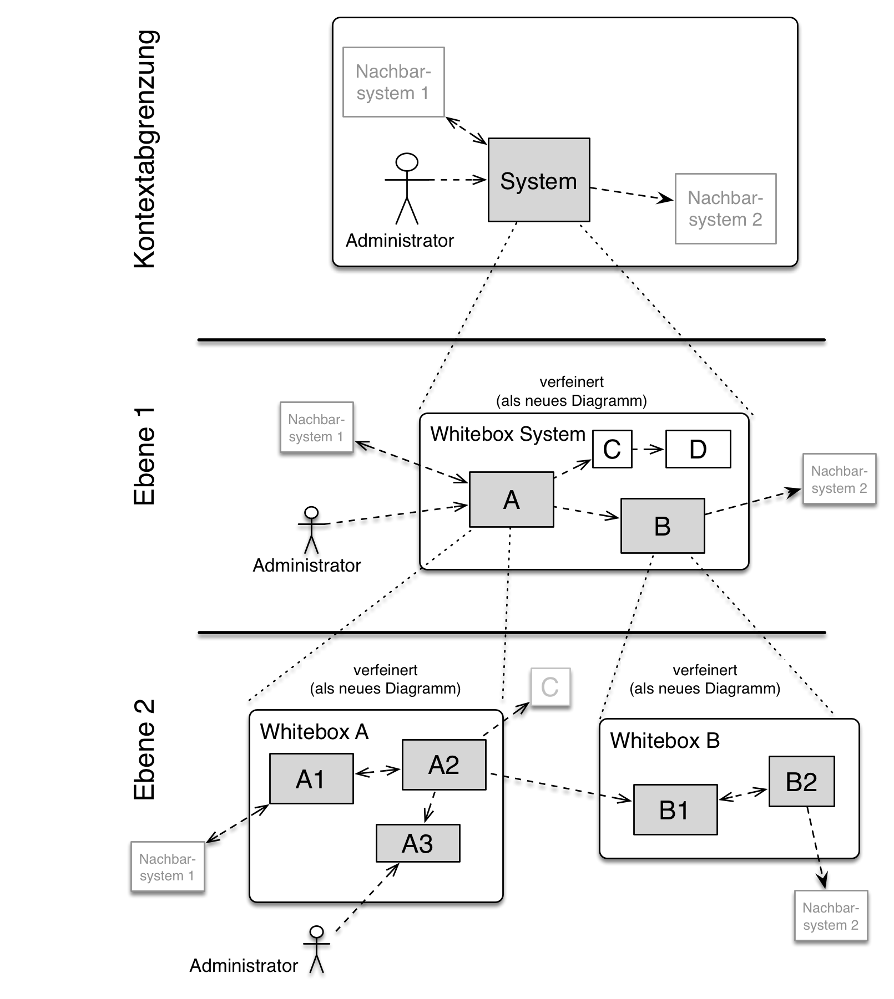

Bausteinsicht
|
Inhalt
Diese Sicht zeigt die statische Zerlegung des Systems in Bausteine sowie deren Beziehungen. Beispiele für Bausteine sind unter anderem:
Diese Sicht sollte in jeder Architekturdokumentation vorhanden sein. In der Analogie zum Hausbau bildet die Bausteinsicht den Grundrissplan. Motivation
Behalten Sie den Überblick über den Quellcode, indem Sie die statische Struktur des Systems durch Abstraktion verständlich machen. Damit ermöglichen Sie Kommunikation auf abstrakterer Ebene, ohne zu viele Implementierungsdetails offenlegen zu müssen. Form
Die Bausteinsicht ist eine hierarchische Sammlung von Blackboxen und Whiteboxen (siehe Abbildung unten) und deren Beschreibungen.  Ebene 1 ist die Whitebox-Beschreibung des Gesamtsystems, zusammen mit Blackbox-Beschreibungen der darin enthaltenen Bausteine. Ebene 2 zoomt in einige Bausteine der Ebene 1 hinein. Sie enthält somit die Whitebox-Beschreibungen ausgewählter Bausteine der Ebene 1, jeweils zusammen mit Blackbox-Beschreibungen darin enthaltener Bausteine. Ebene 3 zoomt in einige Bausteine der Ebene 2 hinein, usw. |
Whitebox Gesamtsystem
|
An dieser Stelle beschreiben Sie die Zerlegung des Gesamtsystems anhand des nachfolgenden Whitebox-Templates. Dieses enthält:
|
<Übersichtsdiagramm>
- Begründung
-
<Erläuternder Text>
- Enthaltene Bausteine
-
<Beschreibung der enthaltenen Bausteine (Blackboxen)>
- Wichtige Schnittstellen
-
<Beschreibung wichtiger Schnittstellen>
|
Hier folgen jetzt Erläuterungen zu Blackboxen der Ebene 1. Falls Sie die tabellarische Beschreibung wählen, so werden Blackboxen darin nur mit Name und Verantwortung nach folgendem Muster beschrieben:
Falls Sie die ausführliche Liste von Blackbox-Beschreibungen wählen, beschreiben Sie jede wichtige Blackbox in einem eigenen Blackbox-Template. Dessen Überschrift ist jeweils der Namen dieser Blackbox. |
<Name Blackbox 1>
|
Beschreiben Sie die <Blackbox 1> anhand des folgenden Blackbox-Templates:
|
<Zweck/Verantwortung>
<Schnittstelle(n)>
<(Optional) Qualitäts-/Leistungsmerkmale>
<(Optional) Ablageort/Datei(en)>
<(Optional) Erfüllte Anforderungen>
<(optional) Offene Punkte/Probleme/Risiken>
Ebene 2
|
Beschreiben Sie den inneren Aufbau (einiger) Bausteine aus Ebene 1 als Whitebox. Welche Bausteine Ihres Systems Sie hier beschreiben, müssen Sie selbst entscheiden. Bitte stellen Sie dabei Relevanz vor Vollständigkeit. Skizzieren Sie wichtige, überraschende, riskante, komplexe oder besonders volatile Bausteine. Normale, einfache oder standardisierte Teile sollten Sie weglassen. |